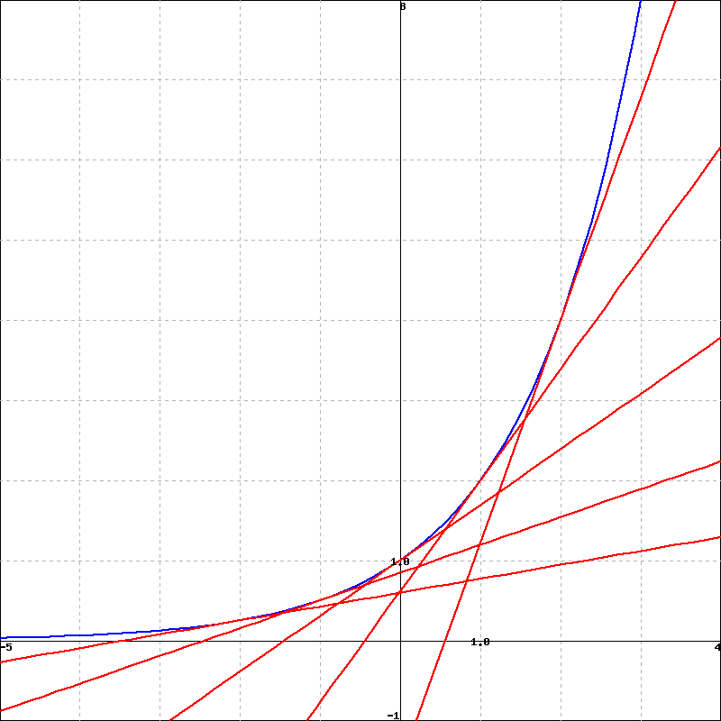
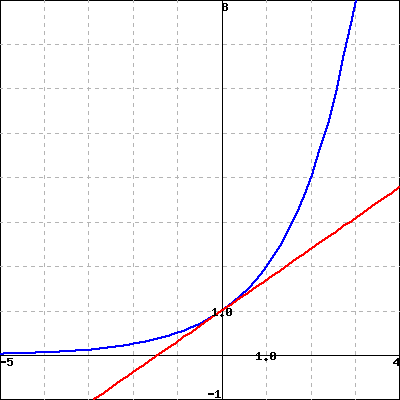
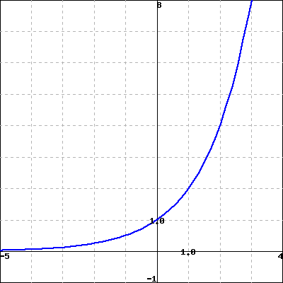
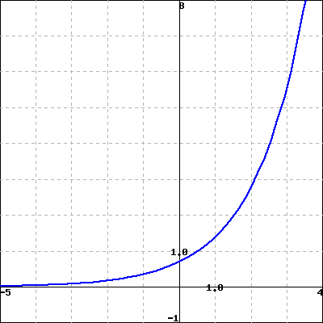

What is a graphical justification for why \(\frac{d}{dx}[a^x] = a^x \ln(a)\text{?}\)
What do the graphs of \(y = \sin(x)\) and \(y = \cos(x)\) suggest as formulas for their respective derivatives?
Once we know the derivatives of \(\sin(x)\) and \(\cos(x)\text{,}\) how do previous derivative rules work when these functions are involved?
Throughout Chapter 2, we will develop shortcut derivative rules to help us bypass the limit definition and quickly compute \(f'(x)\) from a formula for \(f(x)\text{.}\) In Section 2.1, we stated the rule for power functions,
\begin{equation*}
\text{if}~ a ~ \text{is a positive real number and}~ f(x) = a^x,~
\text{then}~ f'(x) = a^x \ln(a)\text{.}
\end{equation*}
Later in this section, we will use a graphical argument to conjecture derivative formulas for the sine and cosine functions.
Preview Activity2.2.1.
(a)Parts a and b.
Consider the function \(g(x) = 2^x\) , which is graphed below, along with the tangent lines to the graph at \(x=-2,-1,0,1,2\text{.}\)

(Click on graph to enlarge. You may have to resize the popup window.)
Use the provided grid to estimate the slope of each tangent line. Your estimates need to be within 10% of the correct answer.
\(g'(-2) =\)
\(g'(-1) =\)
\(g'(0) =\)
\(g'(1) =\)
\(g'(2) =\)
(b)Part c.
The function \(g(x) = 2^x\) is graphed below, along with the tangent line to the graph at \(x=0\text{.}\)

Use the definition of the derivative, with \(h=0.01\text{,}\) to estimate the value of \(g'(0)\text{.}\)
\(g'(0) \approx\)
Use the definition of the derivative, with \(h=0.001\text{,}\) to estimate the value of \(g'(0)\text{.}\)
\(g'(0) \approx\)
Which of the following constants appears to be closest to \(g'(0)\text{?}\)
A. \(2 \)
B. \(\ln 2 \)
C. \(\frac{1}{2} \)
D. \(\sqrt{e}\)
E. \(1\)
F. \(0\)
G. None of these
(c)Parts d and e.
The function \(g(x) = 2^x\) is graphed below on the left, and its derivative \(g'(x)\) is graphed on the right.


Note that it is reasonable to think that \(g'(x) = cg(x)\text{,}\) where \(c\) is a constant, because the two graphs look very similar - it’s possible the only difference between them is a vertical scaling.
Note also that \(g(0)=2^0=1\text{,}\) and you estimated \(g'(0)\) in part c.
If it is true that \(g'(x) = cg(x)\text{,}\) what is the value of \(c\text{?}\)
\(c=\)
Subsection2.2.1The sine and cosine functions
The sine and cosine functions are among the most important functions in all of mathematics. Sometimes called the circular functions due to their definition on the unit circle, these periodic functions play a key role in modeling repeating phenomena such as tidal elevations, the behavior of an oscillating mass attached to a spring, or the location of a point on a bicycle tire. Like polynomial and exponential functions, the sine and cosine functions are considered basic functions, ones that are often used in building more complicated functions. As such, we would like to know formulas for \(\frac{d}{dx} [\sin(x)]\) and \(\frac{d}{dx} [\cos(x)]\text{,}\) and the next two activities lead us to that end.
Activity2.2.2.
Consider the function \(f(x) = \sin(x)\text{,}\) which is graphed in Figure 2.2.1 below. Note carefully that the grid in the diagram does not have boxes that are \(1 \times 1\text{,}\) but rather approximately \(1.57 \times 1\text{,}\) as the horizontal scale of the grid is \(\pi/2\) units per box.
Figure2.2.1.At left, the graph of \(y = f(x) = \sin(x)\text{.}\)
At each of \(x = -2\pi, -\frac{3\pi}{2}, -\pi, -\frac{\pi}{2}, 0, \frac{\pi}{2}, \pi, \frac{3\pi}{2}, 2\pi\text{,}\) use a straightedge to sketch an accurate tangent line to \(y = f(x)\text{.}\)
Use the provided grid to estimate the slope of the tangent line you drew at each point. Pay careful attention to the scale of the grid.
Use the limit definition of the derivative to estimate \(f'(0)\) by using small values of \(h\text{,}\) and compare the result to your visual estimate for the slope of the tangent line to \(y = f(x)\) at \(x = 0\) in (b). Using periodicity, what does this result suggest about \(f'(2\pi)\text{?}\) about \(f'(-2\pi)\text{?}\)
Based on your work in (a), (b), and (c), sketch an accurate graph of \(y = f'(x)\) on the axes adjacent to the graph of \(y = f(x)\text{.}\)
What familiar function do you think is the derivative of \(f(x) = \sin(x)\text{?}\)
Activity2.2.3.
Consider the function \(g(x) = \cos(x)\text{,}\) which is graphed in Figure 2.2.4 below. Note carefully that the grid in the diagram does not have boxes that are \(1 \times 1\text{,}\) but rather approximately \(1.57 \times 1\text{,}\) as the horizontal scale of the grid is \(\pi/2\) units per box.
Figure2.2.4.At left, the graph of \(y = g(x) = \cos(x)\text{.}\)
At each of \(x = -2\pi, -\frac{3\pi}{2}, -\pi, -\frac{\pi}{2}, 0, \frac{\pi}{2}, \pi, \frac{3\pi}{2}, 2\pi\text{,}\) use a straightedge to sketch an accurate tangent line to \(y = g(x)\text{.}\)
Use the provided grid to estimate the slope of the tangent line you drew at each point. Again, note the scale of the axes and grid.
Use the limit definition of the derivative to estimate \(g'(\frac{\pi}{2})\) by using small values of \(h\text{,}\) and compare the result to your visual estimate for the slope of the tangent line to \(y = g(x)\) at \(x = \frac{\pi}{2}\) in (b). Using periodicity, what does this result suggest about \(g'(-\frac{3\pi}{2})\text{?}\) can symmetry on the graph help you estimate other slopes easily?
Based on your work in (a), (b), and (c), sketch an accurate graph of \(y = g'(x)\) on the axes adjacent to the graph of \(y = g(x)\text{.}\)
What familiar function do you think is the derivative of \(g(x) = \cos(x)\text{?}\)
The results of the two preceding activities suggest that the sine and cosine functions not only have beautiful connections such as the identities \(\sin^2(x) + \cos^2(x) = 1\) and \(\cos(x - \frac{\pi}{2}) = \sin(x)\text{,}\) but that they are even further linked through calculus, as the derivative of each involves the other. The following rules summarize the results of the activities 1 .
We have now added the sine and cosine functions to our library of basic functions whose derivatives we know. The constant multiple and sum rules still hold, of course, as well as all of the inherent meaning of the derivative.
Activity2.2.4.
Answer each of the following questions. Where a derivative is requested, be sure to label the derivative function with its name using proper notation.
Determine the derivative of \(h(t) = 3\cos(t) - 4\sin(t)\text{.}\)
Find the exact slope of the tangent line to \(y = f(x) = 2x + \frac{\sin(x)}{2}\) at the point where \(x = \frac{\pi}{6}\text{.}\)
Find the equation of the tangent line to \(y = g(x) = x^2 + 2\cos(x)\) at the point where \(x = \frac{\pi}{2}\text{.}\)
Determine the derivative of \(p(z) = z^4 + 4^z + 4\cos(z) - \sin(\frac{\pi}{2})\text{.}\)
The function \(P(t) = 24 + 8\sin(t)\) represents a population of a particular kind of animal that lives on a small island, where \(P\) is measured in hundreds and \(t\) is measured in decades since January 1, 2010. What is the instantaneous rate of change of \(P\) on January 1, 2030? What are the units of this quantity? Write a sentence in everyday language that explains how the population is behaving at this point in time.
Subsection2.2.2Summary
For an exponential function \(f(x) = a^x\)\((a \gt 1)\text{,}\) the graph of \(f'(x)\) appears to be a scaled version of the original function. In particular, careful analysis of the graph of\(f(x) = 2^x\text{,}\) suggests that \(\frac{d}{dx}[2^x] = 2^x \ln(2)\text{,}\) which is a special case of the rule we stated in Section 2.1.
By carefully analyzing the graphs of \(y = \sin(x)\) and \(y = \cos(x)\text{,}\) and by using the limit definition of the derivative at select points, we found that \(\frac{d}{dx} [\sin(x)] = \cos(x)\) and \(\frac{d}{dx} [\cos(x)] = -\sin(x)\text{.}\)
We note that all previously encountered derivative rules still hold, but now may also be applied to functions involving the sine and cosine. All of the established meaning of the derivative applies to these trigonometric functions as well.
Exercises2.2.3Exercises
1.
Let
\begin{equation*}
f(x) = 5 \sin x + 10 \cos x
\end{equation*}
\(f'(x) =\)
\(f'( \frac { 5 \pi } {4} ) =\)
2.
In this problem, please evaluate the trig functions without a calculator and do not use a decimal point in your answer.
An equation of the tangent line to the curve \(y = \sin (x)\) at \(x = 3\pi/4 \,\) is
\(y =\)\(+\)\(\cdot (x - 3\pi/4)\) .
An equation of the tangent line to the curve \(y = \cos (x)\) at \(x = 7\pi/4 \,\) is
\(y =\)\(+\)\(\cdot (x - 7\pi/4)\) .
3.
A mass on a spring vibrates horizontally on a smooth level surface (see the figure). Its equation of motion is \(x(t)=6 \sin{t}\text{,}\) where \(t\) is in seconds and \(x\) in centimeters.
(a) Find the velocity at time \(t\text{.}\)
(b) After finding the velocity of the mass at time \(t=2\pi/3\text{,}\) in what direction is it moving at that time?
Answer "l" for left or "r" for right below.
\(v(t) =\)
direction:
4.
For what values of \(x\) in \([0, 2\pi]\) does the graph of \(f(x)=x+2\sin{x}\) have a horizontal tangent?
List the values of \(x\) below. Separate multiple values with commas.
\(x=\)
5.
Suppose that \(V(t) = 24 \cdot 1.07^t + 6 \sin(t)\) represents the value of a person’s investment portfolio in thousands of dollars in year \(t\text{,}\) where \(t = 0\) corresponds to January 1, 2010.
At what instantaneous rate is the portfolio’s value changing on January 1, 2012? Include units on your answer.
Determine the value of \(V''(2)\text{.}\) What are the units on this quantity and what does it tell you about how the portfolio’s value is changing?
On the interval \(0 \le t \le 20\text{,}\) graph the function \(V(t) = 24 \cdot 1.07^t + 6 \sin(t)\) and describe its behavior in the context of the problem. Then, compare the graphs of the functions \(A(t) = 24 \cdot 1.07^t\) and \(V(t) = 24 \cdot 1.07^t + 6 \sin(t)\text{,}\) as well as the graphs of their derivatives \(A'(t)\) and \(V'(t)\text{.}\) What is the impact of the term \(6 \sin(t)\) on the behavior of the function \(V(t)\text{?}\)
6.
Let \(f(x) = 3\cos(x) - 2\sin(x) + 6\text{.}\)
Determine the exact slope of the tangent line to \(y = f(x)\) at the point where \(a = \frac{\pi}{4}\text{.}\)
Determine the tangent line approximation to \(y = f(x)\) at the point where \(a = \pi\text{.}\)
At the point where \(a = \frac{\pi}{2}\text{,}\) is \(f\) increasing, decreasing, or neither?
At the point where \(a = \frac{3\pi}{2}\text{,}\) does the tangent line to \(y = f(x)\) lie above the curve, below the curve, or neither? How can you answer this question without even graphing the function or the tangent line?
7.
In this exercise, we explore how the limit definition of the derivative more formally shows that \(\frac{d}{dx}[\sin(x)] = \cos(x)\text{.}\) Letting \(f(x) = \sin(x)\text{,}\) note that the limit definition of the derivative tells us that
Recall the trigonometric identity for the sine of a sum of angles \(\alpha\) and \(\beta\text{:}\)\(\sin(\alpha + \beta) = \sin(\alpha)\cos(\beta) + \cos(\alpha)\sin(\beta)\text{.}\) Use this identity and some algebra to show that
What do your results in (b) and (c) thus tell you about \(f'(x)\text{?}\)
By emulating the steps taken above, use the limit definition of the derivative to argue convincingly that \(\frac{d}{dx}[\cos(x)] = -\sin(x)\text{.}\)
You have attempted of activities on this page.
These two rules may be formally proved using the limit definition of the derivative and the expansion identities for \(\sin(x+h)\) and \(\cos(x+h)\text{.}\)